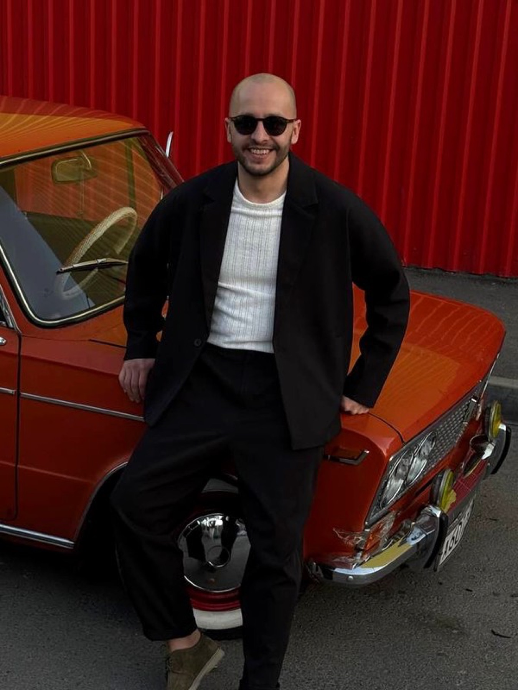
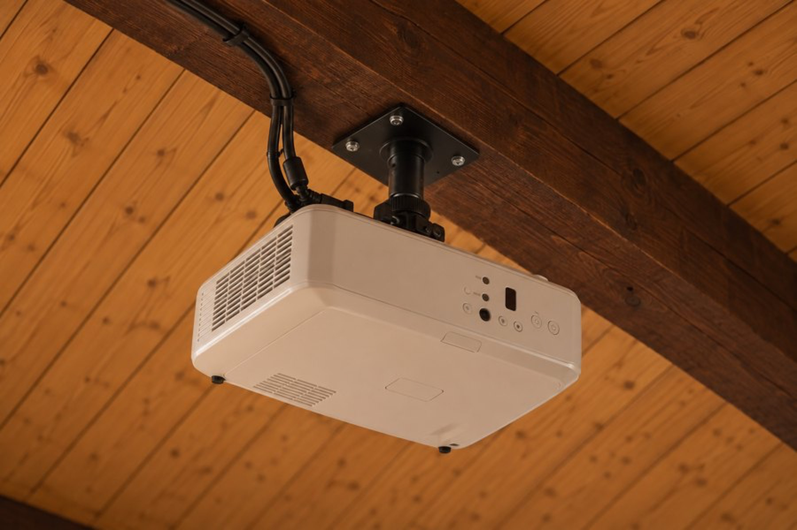
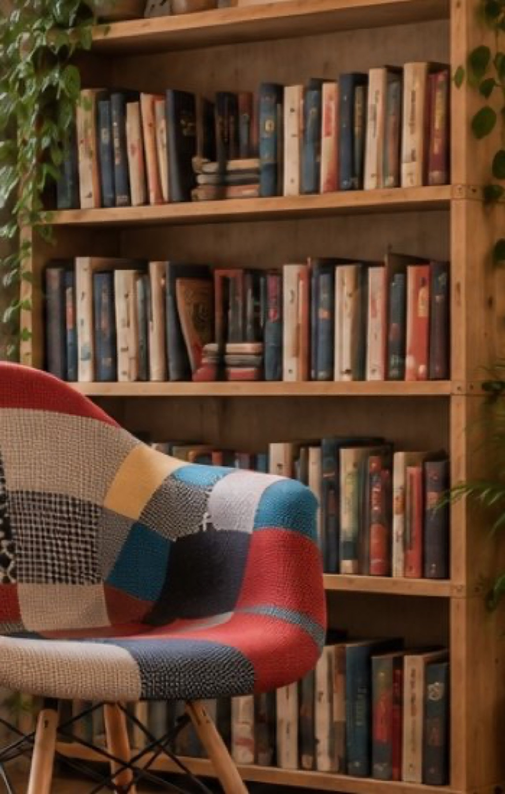

02 · Сооснователь · DAPI
Илья
Ведёт DAPI и помогает превращать идеи «Вместе» в продукты, кейсы и задачи для команды.
О человеке
Роль
Связывает работу студии DAPI с пространством и проектами участников.
Можно обсудить
Продуктовое мышление, сбор команды, постановку задач и переход от идеи к первому результату.
Формат
Разбор проекта, рабочая сессия или разговор с небольшой командой.
В работе
Проекты, прототипы и среда, в которой появляются решения.



Расписание
Публикуем только подтверждённые встречи.
Ближайшая встречаДата и тема уточняютсяУзнать в Telegram